雑誌封面
アーキテクチャ雑誌封面デザイン企画 （サイズ：297*225mm）
建築物：東京カテドラル聖マリア大聖堂 建築家：丹下健三
雑誌：Modern Architecture 雑誌ロゴ：MとA組み合わせして、大きくなMにしました。
画像の特徴：建物の中央塔を中心に配置し、その特徴的なデザインとシルエットを強調。
画像とテキストの配置：画像を全面に配置し、テキストは画像に重ねる形で配置します。主見出しと副見出しは画像の主要部分を邪魔しないように適切に配置。
色彩：背景色は空の青色を基調とし、クリーンで明るい印象を与える。すべてのテキストは白色で、背景の青とコントラストをつける。

 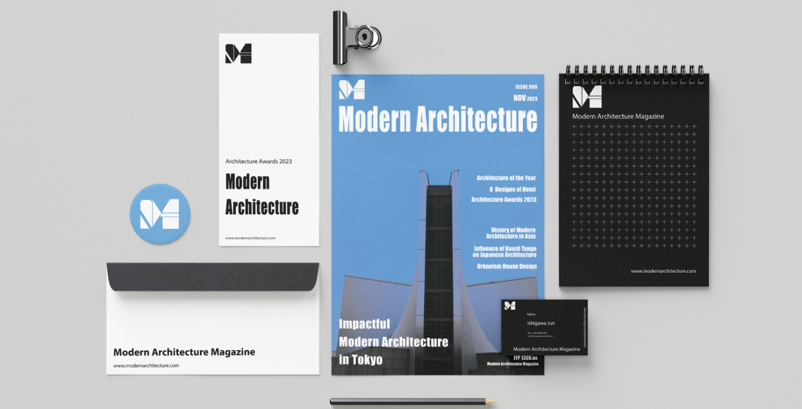
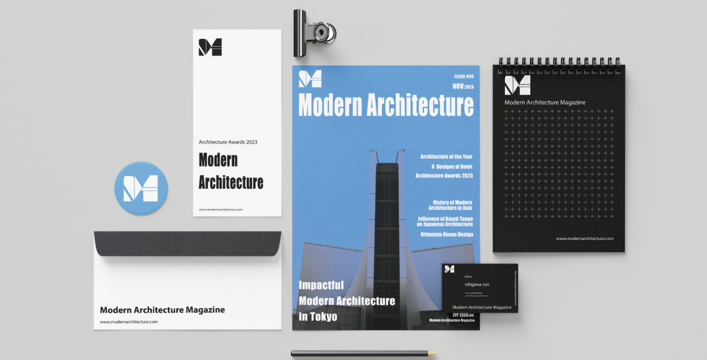
タイポグラフィー
Typography
 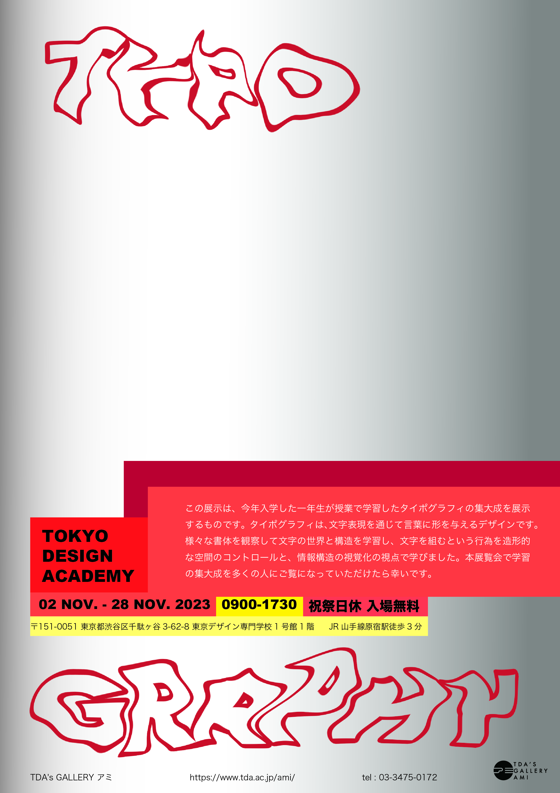
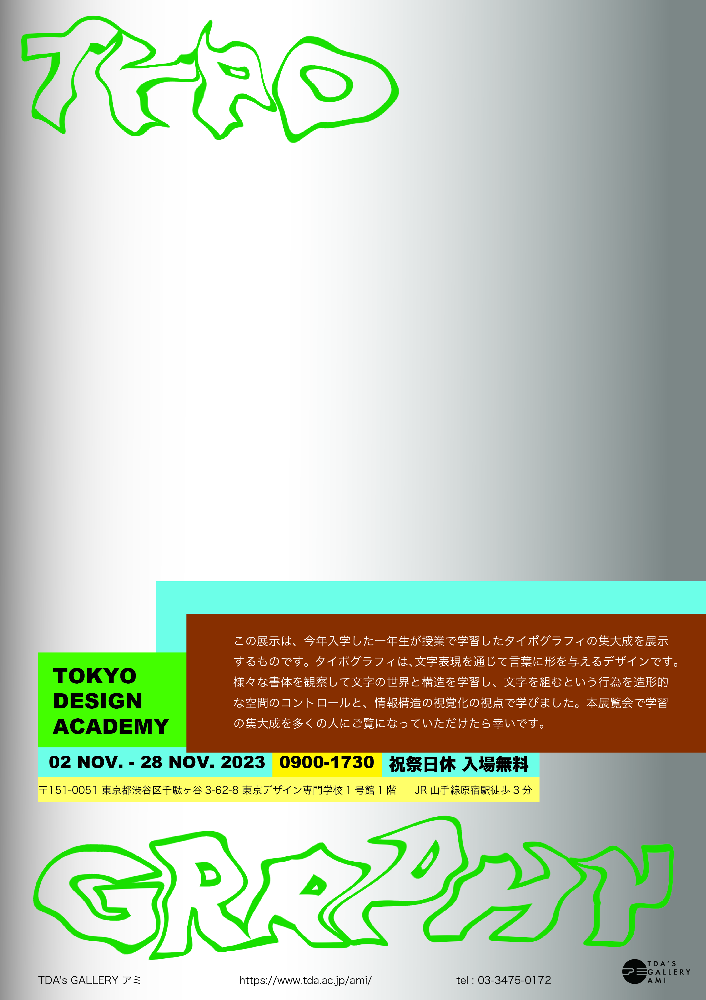
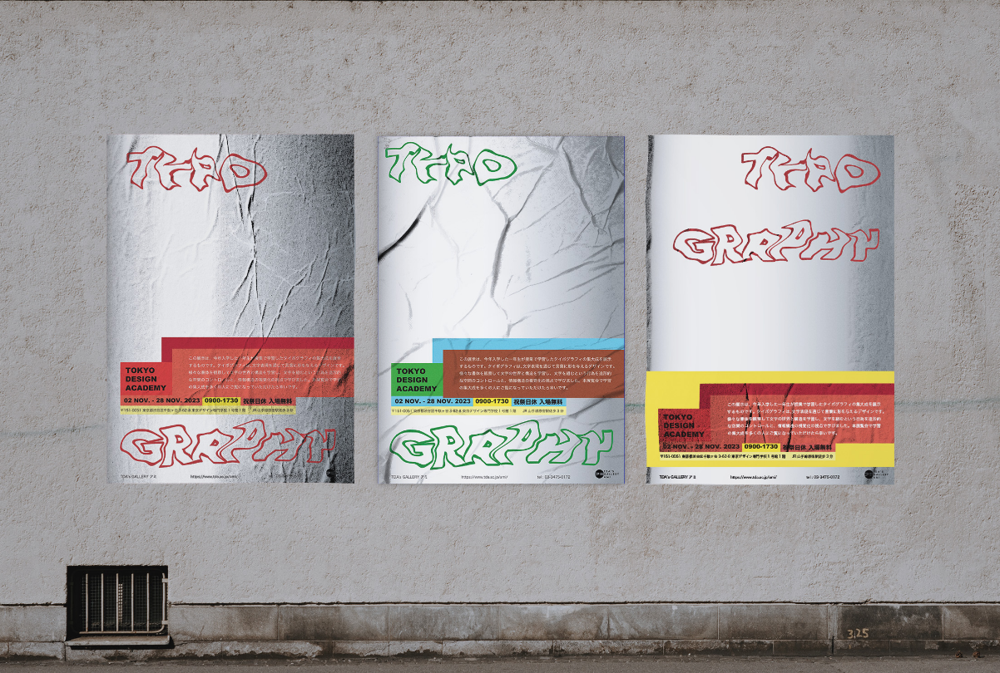
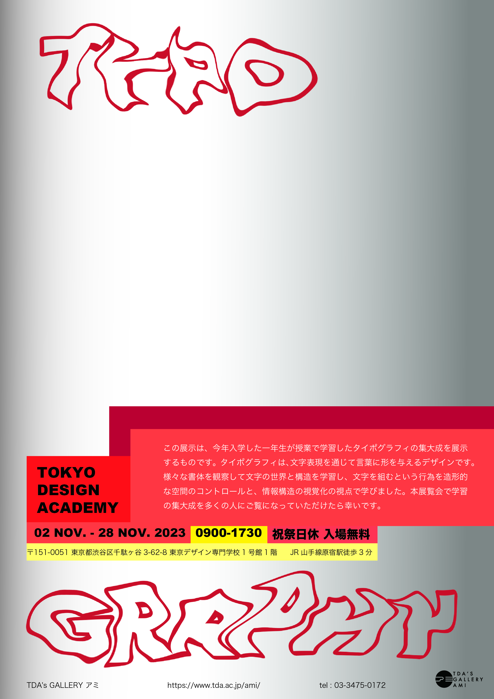
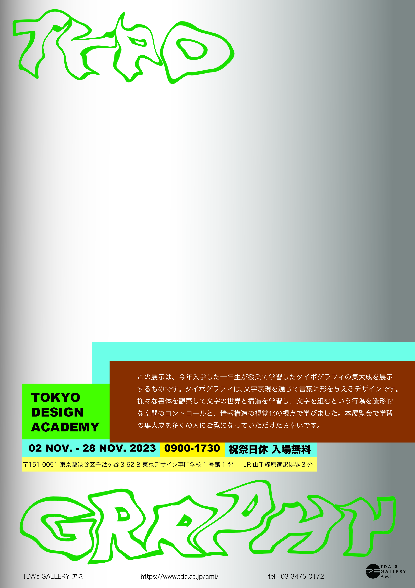
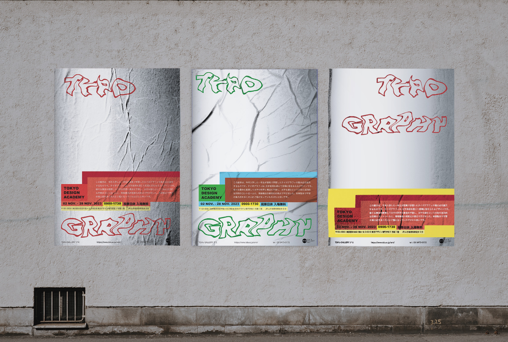
交通広告
スプライト
(Sprite)
コンセプト:スプライト炭酸水の夏キャンペーン定番宣伝に想像して、緑と黄色を使って、夏の光景が見えるように、表現します。暑い夏でもずっとさっぱりの気分にしたいです。
スプライトの爽快感を強調するために鮮やかな緑と黄色を使用しています。緑はスプライトのフレッシュさを、黄色は夏の日差しとエネルギーを表現しています。中央に配置されたスプライトの缶は、視覚的な焦点となり、商品認知度を高めます。
 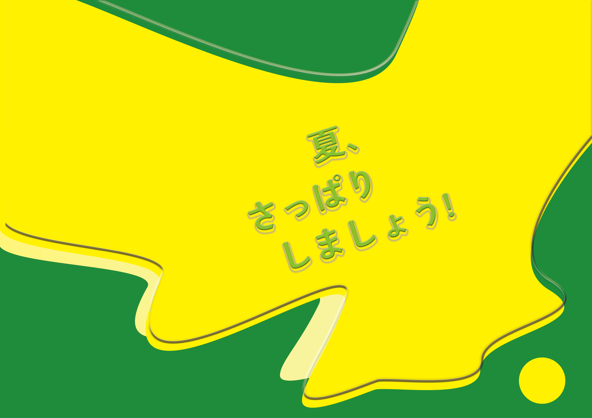
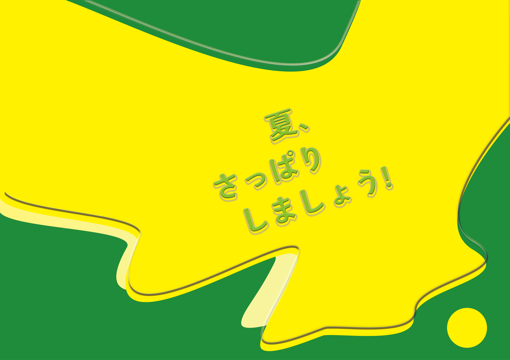


Meijiマーブル新聞広告
アーキテクチャ雑誌封面デザイン企画 （サイズ：297*225mm）
コピーワーク：小さい頃を思い出す。
ターゲット:キッズ、こどもいるパパママ
コンプセド：1961年（昭和36年）から発売している商品。
今でも、このマーブルチョコは人気です。
親の時代から存在しているマーブルを可愛いキャタピラーに再現して、二世代で思い出のおやつ。
色とりどりのチョコレートを使って可愛らしいキャタピラーを描いています。明るい笑顔のキャラクターは、見る人に親しみやすさと楽しさを感じさせます。背景は柔らかいピンク色で、カラフルなチョコレートとのコントラストが際立ちます。明るく元気な印象を与える配色です。
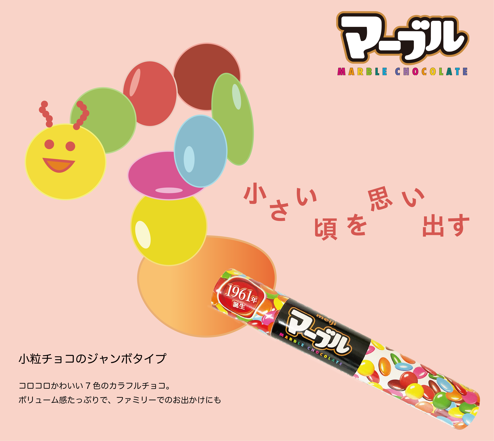